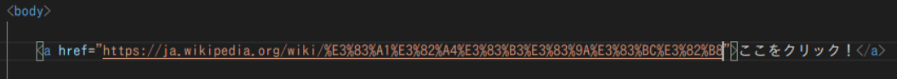
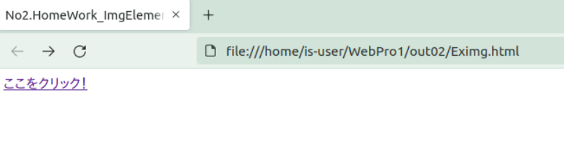
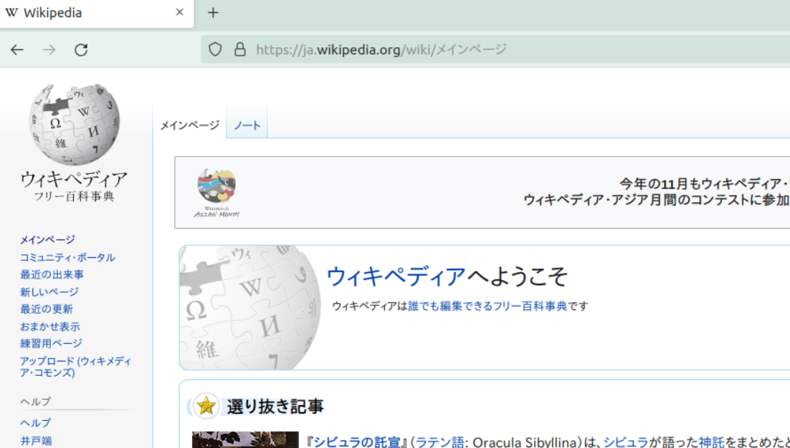
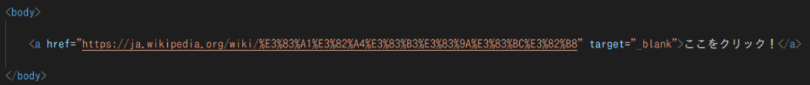
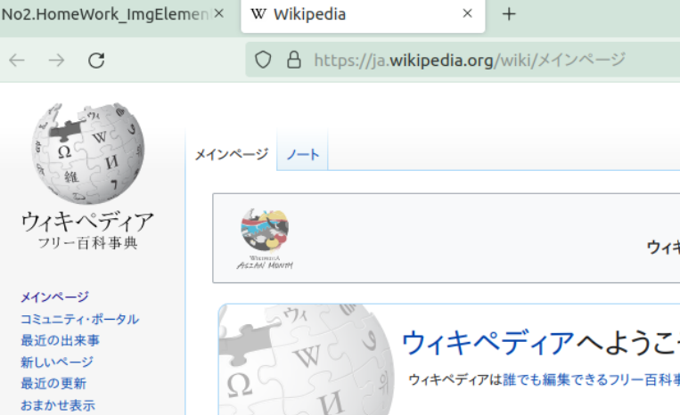

最終更新日:2021 11/8
SERIES No.02-1
contents
はじめに
ここではa要素についての説明を行います。
要素説明
a要素は「アンカー要素」と呼ばれ、他のWebページに飛ぶハイパーリンクを記載できます。
以下は、a要素で使用できる属性から最も使用する属性2点抜き出した物です。
href属性値は、リンク先のファイルパスを記載する事で他のページに移動が可能になる属性値です。
href属性のみ使用すると、現在いるタブでの画面遷移でページ移動が行なわれます。別の方法での移動をしたい場合は以下の属性値を使いましょう。
別の方法での移動をしたい場合は以下の属性値を使用しましょう
target属性値は、ハイパーリンクを踏んだ時に、新しくウィンドウを開くこと等が指定できる属性値です。
HTMLコード例
実際にa要素を使用してHTMLコード例、実行結果を見ていきましょう。
a要素コード例:href
<コード例>
<実行結果>
左上のタブの数に注目してみると...
新規のタブは生成されずに、画面遷移ができました。
a要素コード例:target
<コード例>
<実行結果>
こちらは左上のタブの数に注目してみると...
新規のタブが生成され、2つ目のウィンドウで表示されています。
おわりに
Webページの作成、運営において自分の他のページなどのリンクを付けられるとユーザーの側からしても非常に便利ですね。
また情報の参照元URLを記載しておけばクリックで一飛びできるので是非使用したい要素でもありますね。
-ソース一覧-
a要素参考サイト